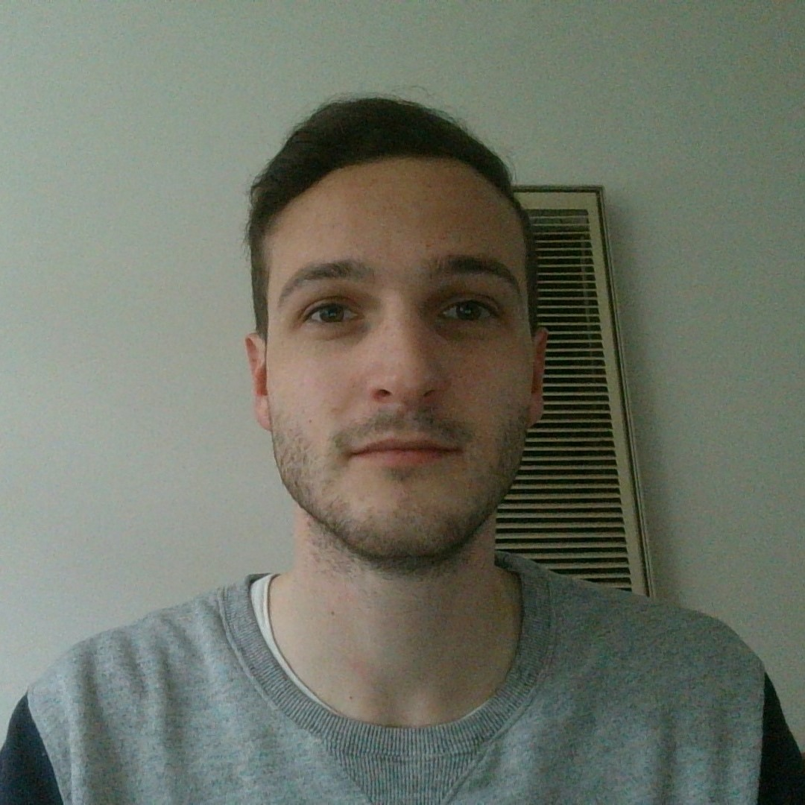

Hello, I'm {{this.title}}
Software Developer.
I am an aspiring computer scientist with a particular interest in software development. I have completed my Bachelor's of Information Technology from RMIT University, along with previous work experience in the industry. I have a strong drive to further learn and expand my knowledge base so I can drive business success through technology solutions.

About Me
I am a passionate and enthusiastic IT graduate with a keen interest in software engineering. My journey in computer science started when I progressed from watching YouTube tutorials for editing and producing music to coming across coding videos and developing a curiosity into computer science. My interest in programming quickly developed into a passion, so I enrolled at RMIT University and by 2022 had completed my Bachelor's of Information Technology. At university I learnt the core concepts of computer science and in my own time I'd make various websites to develop my skills. I also worked for a time at an internship which helped me understand a web developers responsibilities and work flows in a real business.
After completing university I learnt about many other areas of computer science and beyond software development I have developed an interest in Cyber Security, System Administration, Network Engineering, Cloud Engineering and Database Administration. I am eager to work in these areas, however my passion for programming and creativity tends to point me in the direction of software development. Additionally, having honed my skills on personal projects and professional experience I am now equipped with a strong foundation in particularly front-end developement. The principles I pride my programming on are scalability, efficiency, sleek UI design and an intuitive UX. This ensures a standard for good user experience, easier maintenance/testing, less and more efficient resource use, along with sound logic.
Previous to my higher education and pursuit of a career in computer science, I worked in a few different customer service jobs where I learnt a variety of practical and interpersonal skills that would be useful in an IT workspace.